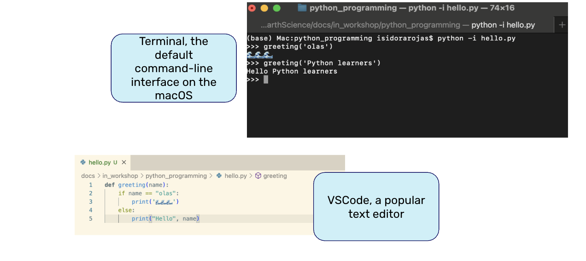
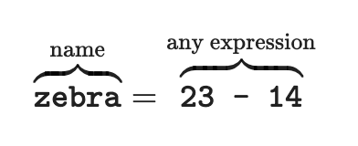

[69]:
import numpy as np
from netCDF4 import Dataset
Programming with Python¶
Session Overview¶
What is programming with Python?
Basic Python Math
Variable types
Importing packages
Numpy
Reading in a NetCDF file
For loops, if statements, and logicals
Creating Functions
Best Practices / Reading Errors / Debugging
What is programming with Python?¶
Jupyter Notebooks 📓¶
Often, code is written in a text editor and then run in a command-line interface
Jupyter Notebooks allow us to write and run code within a single documents. They also allow us to embed text and code.
Visual Studio Code (VSCode) is an easy to use development environment that has extensions for every major programming language. We will be using VSCode for this workshop
Basic Mathematical Operations¶
Operation |
Operator |
Example |
Value |
|---|---|---|---|
Addition |
|
|
|
Subtraction |
|
|
|
Multiplication |
|
|
|
Division |
|
|
|
Remainder |
|
|
|
Exponentiation |
|
|
|
An expresion is a combination of values, operators and functions that evaluates to some value
We will enter our expressions in code cells
Hit shift + enter (or shift + return) on your keyboard or,
Press the “Run” button in the toolbar
[22]:
23
[22]:
23
[23]:
-15 + 2.718
[23]:
-12.282
[24]:
4 ** 3
[24]:
64
Python uses typical order of operations - PEMDAS¶
[25]:
(2 + 3 + 4) / 3
[25]:
3.0
[26]:
(5 * 2) ** 3
[26]:
1000
Activity¶
In the cell below, write an expression that’s equivalent to
\((19 + 6 \cdot 3) - 15 \cdot \left( \sqrt{100} \cdot \frac{1}{30} \right) \cdot \frac{3}{5} + 4^2 + \left(6 - \frac{2}{3} \right) \cdot 12\)
[10]:
# activity cell
(19 + 6 * 3) - 15 * (100 ** 0.5 * (1/30)) * (3/5) + 4**2 + (6 - (2/3)) * 12
[10]:
114.0
Variables¶
- A variable is a place to store a value so that in can be referred to later in our code. To define a variable, we use an assignment statement
An assignment statement changes the meaning of the name to the left of the = sign
In the example above, zebra is bound to 9 (the value) not 23-14 (expression)
Example¶
Before we use a name in an assignment statement, it has no meaning. After the assignment statement, it refers to the value assigned to it.
[27]:
temp_in_f
[27]:
41.0
[28]:
temp_in_c = 5
temp_in_f = temp_in_c * 9/5 + 32
[29]:
temp_in_f
[29]:
41.0
Any time we use temp_in_f in an expression, 41.0 is substituted for it.
[15]:
temp_in_f * -4
[15]:
-164.0
Note that the above expression does not change the value of temp_in_f, because we did not reassign temp_in_f
[16]:
temp_in_f
[16]:
41.0
Naming variables¶
Give your variables helpful names so that you/your collaborators know what they refer to
variables can contain uppercase, lowercase, numbers, and underscores
they cannot start with a number
they are case sensitive!
no character limit!
Examples of valid but poor variable names:
[17]:
six = 15
[18]:
i_love_waves_999 = 60 * 60 * 24 * 365
Examples of assignment statements that are valid and use good variable names:
[ ]:
seconds_per_hour = 60 * 60
hours_per_year = 24 * 365
seconds_per_year = seconds_per_hour * hours_per_year
Variable Types¶
What’s the difference?
[ ]:
4 / 2
2.0
[20]:
5 - 3
[20]:
2
To us, 2.0 and 2 are the same number. But to Python, these appear to be different
Two numeric variable types: int and float¶
int: an integer of any sizefloat: a number with a decimal point
For int:¶
if you add, subtract, multiply or exponentiate
int, result is anotherintinthas arbitrary precision in Python, meaning that calculations will always be exact
[ ]:
7 - 15
[30]:
2 ** 300
[30]:
2037035976334486086268445688409378161051468393665936250636140449354381299763336706183397376
Use type() to check the kind of data type
[43]:
type(2 ** 300)
[43]:
int
For float:¶
A
floatis specified using a decimal pointMight be printed using scientific notation
[ ]:
3.2 + 2.5
[ ]:
type(3.2 + 2.5)
[32]:
# The result is in scientific notation: e+90 means "times 90"
2.0 ** 300
[32]:
2.037035976334486e+90
Strings 🧶¶
a string is a snippet of text, it can be any length
Enclosed by either single quotes (’) or doulble quotes (“)
[ ]:
'woof'
[46]:
type('woof')
[46]:
str
String arithmetic¶
When using the + symbol between strings, the operation is called concatenation
[39]:
s1 = 'send'
s2 = 'swell 🌊'
[40]:
s1 + s2
[40]:
'sendswell 🌊'
[41]:
s1 + ' ' + s2
[41]:
'send swell 🌊'
[42]:
s1 * 3
[42]:
'sendsendsend'
String methods¶
String methods are special functions for strings
string methods are accessed with a
.after the stringExamples:
upper,title,replacee, but there are many more
[48]:
blue_crush_string = '7 days until pipe masters'
[49]:
blue_crush_string.title()
[49]:
'7 Days Until Pipe Masters'
[50]:
blue_crush_string.upper()
[50]:
'7 DAYS UNTIL PIPE MASTERS'
[51]:
blue_crush_string.replace('7', '6')
[51]:
'6 days until pipe masters'
[52]:
# len is not a method since it doesn't use dot notation
len(blue_crush_string)
[52]:
25
Converting between data types¶
if you mix
ints andfloats in an expression, the result will be a ``float``a value can be converted using the
intandfloatfunctionsany value can be converted to a string using
strsome strings can be converted to
intandfloat
[45]:
int(2.0 + 3)
[45]:
5
[54]:
str(3)
[54]:
'3'
[55]:
float('3')
[55]:
3.0
[56]:
int('silly string')
---------------------------------------------------------------------------
ValueError Traceback (most recent call last)
Cell In[56], line 1
----> 1 int('silly string')
ValueError: invalid literal for int() with base 10: 'silly string'
A note on Python Functions¶
Functions in Python work the same way math functions fo
inputs to functions are called arguments
Python comes with a number of built-in functions such as
int,float, andstrCalling a function, or using a function, means asking the function to “run its recipe” on the given input
Type
?after a function’s name to see its documentation, or use thehelpfunction
[57]:
str?
Init signature: str(self, /, *args, **kwargs)
Docstring:
str(object='') -> str
str(bytes_or_buffer[, encoding[, errors]]) -> str
Create a new string object from the given object. If encoding or
errors is specified, then the object must expose a data buffer
that will be decoded using the given encoding and error handler.
Otherwise, returns the result of object.__str__() (if defined)
or repr(object).
encoding defaults to sys.getdefaultencoding().
errors defaults to 'strict'.
Type: type
Subclasses: StrEnum, DeferredConfigString, FoldedCase, _rstr, _ScriptTarget, _ModuleTarget, LSString, include, Keys, InputMode, ...
[58]:
help(float)
Help on class float in module builtins:
class float(object)
| float(x=0, /)
|
| Convert a string or number to a floating-point number, if possible.
|
| Methods defined here:
|
| __abs__(self, /)
| abs(self)
|
| __add__(self, value, /)
| Return self+value.
|
| __bool__(self, /)
| True if self else False
|
| __ceil__(self, /)
| Return the ceiling as an Integral.
|
| __divmod__(self, value, /)
| Return divmod(self, value).
|
| __eq__(self, value, /)
| Return self==value.
|
| __float__(self, /)
| float(self)
|
| __floor__(self, /)
| Return the floor as an Integral.
|
| __floordiv__(self, value, /)
| Return self//value.
|
| __format__(self, format_spec, /)
| Formats the float according to format_spec.
|
| __ge__(self, value, /)
| Return self>=value.
|
| __getnewargs__(self, /)
|
| __gt__(self, value, /)
| Return self>value.
|
| __hash__(self, /)
| Return hash(self).
|
| __int__(self, /)
| int(self)
|
| __le__(self, value, /)
| Return self<=value.
|
| __lt__(self, value, /)
| Return self<value.
|
| __mod__(self, value, /)
| Return self%value.
|
| __mul__(self, value, /)
| Return self*value.
|
| __ne__(self, value, /)
| Return self!=value.
|
| __neg__(self, /)
| -self
|
| __pos__(self, /)
| +self
|
| __pow__(self, value, mod=None, /)
| Return pow(self, value, mod).
|
| __radd__(self, value, /)
| Return value+self.
|
| __rdivmod__(self, value, /)
| Return divmod(value, self).
|
| __repr__(self, /)
| Return repr(self).
|
| __rfloordiv__(self, value, /)
| Return value//self.
|
| __rmod__(self, value, /)
| Return value%self.
|
| __rmul__(self, value, /)
| Return value*self.
|
| __round__(self, ndigits=None, /)
| Return the Integral closest to x, rounding half toward even.
|
| When an argument is passed, work like built-in round(x, ndigits).
|
| __rpow__(self, value, mod=None, /)
| Return pow(value, self, mod).
|
| __rsub__(self, value, /)
| Return value-self.
|
| __rtruediv__(self, value, /)
| Return value/self.
|
| __sub__(self, value, /)
| Return self-value.
|
| __truediv__(self, value, /)
| Return self/value.
|
| __trunc__(self, /)
| Return the Integral closest to x between 0 and x.
|
| as_integer_ratio(self, /)
| Return a pair of integers, whose ratio is exactly equal to the original float.
|
| The ratio is in lowest terms and has a positive denominator. Raise
| OverflowError on infinities and a ValueError on NaNs.
|
| >>> (10.0).as_integer_ratio()
| (10, 1)
| >>> (0.0).as_integer_ratio()
| (0, 1)
| >>> (-.25).as_integer_ratio()
| (-1, 4)
|
| conjugate(self, /)
| Return self, the complex conjugate of any float.
|
| hex(self, /)
| Return a hexadecimal representation of a floating-point number.
|
| >>> (-0.1).hex()
| '-0x1.999999999999ap-4'
| >>> 3.14159.hex()
| '0x1.921f9f01b866ep+1'
|
| is_integer(self, /)
| Return True if the float is an integer.
|
| ----------------------------------------------------------------------
| Class methods defined here:
|
| __getformat__(typestr, /)
| You probably don't want to use this function.
|
| typestr
| Must be 'double' or 'float'.
|
| It exists mainly to be used in Python's test suite.
|
| This function returns whichever of 'unknown', 'IEEE, big-endian' or 'IEEE,
| little-endian' best describes the format of floating-point numbers used by the
| C type named by typestr.
|
| fromhex(string, /)
| Create a floating-point number from a hexadecimal string.
|
| >>> float.fromhex('0x1.ffffp10')
| 2047.984375
| >>> float.fromhex('-0x1p-1074')
| -5e-324
|
| ----------------------------------------------------------------------
| Static methods defined here:
|
| __new__(*args, **kwargs)
| Create and return a new object. See help(type) for accurate signature.
|
| ----------------------------------------------------------------------
| Data descriptors defined here:
|
| imag
| the imaginary part of a complex number
|
| real
| the real part of a complex number
Lists¶
In Python, a list is used to store multiple values within a signle value. To create a new list, use
[square brackets]Lists are a sequence of any type of object
[61]:
temp_list = [68, 73, 70, 74, 76, 73, 74]
Note that the elements in a list don’t need to be unique
[62]:
type(temp_list)
[62]:
list
To find the average temperature, we can divide the sum of the temperatures by the number of temperatures recorded:
[66]:
sum(temp_list) / len(temp_list)
[66]:
72.57142857142857
Within a list, you can store elements of different types
[67]:
mixed_temp = [68, 'sixty', 68.9, 62]
mixed_temp
[67]:
[68, 'sixty', 68.9, 62]
HOWEVER…¶
Lists are slow 🐌.
This causes a problem when working with large datasets
To gain additional functionality, we need to import a library
Importing Packages¶
Python doesn’t have everything we need built in
we import packages (AKA libraries) through import statements
Packages are collections of Python functions and values
Syntax for calling functions:
package.function()
[85]:
import numpy as np # numpy is usually imported as np (but doesn't have to be)
from netCDF4 import Dataset
from package import functionUseful Packages:
Package |
Purpose |
|---|---|
numpy |
Numerical operations |
matplotlib |
Plotting and visualization |
netCDF4 |
Using netCDF files |
pandas |
Data analysis and manipulation |
xarray |
Labeled multi-dimensional arrays |
Packages have their own associated documentation which shows what functions are associated.
NumPy provides support for arrays and operations on them and is heavily used in the field
To use NumPy, we need to import it. It’s usually imported as np (but doesn’t have to be)
Think of NumPy arrays as faster lists
To create an array, we pass a list as input to the
np.arrayfunction
[86]:
temp_array = np.array(temp_list)
temp_array
[86]:
array([68, 73, 70, 74, 76, 73, 74])
[90]:
data = Dataset('python_programming/scripps_pier-2023.nc', mode='r')
SST = np.array(data.variables['temperature'])
type(SST)
[90]:
numpy.ndarray
For Loops, While Loops, If Statements, and Logicals¶
[ ]:
2.0 + 3
5.0
Creating Functions¶
Numpy¶
Numpy arrays (declaring them: np.array(), np.linspace, range())
Slicing arrays
Common mathemtical operations with numpy
Numpy Arrays¶
Slicing arrays¶
Basics:
Array indices start at 0
Array[x,y] selects a single element from the 2D array where x = row and y = column
General syntax for an array: array[start:stop:step]
Use low:high to specify a slice of the array along a dimension of the array including indices from low to high-1
All indexing and slicing that works on arrays also works on strings
Numpy Math¶
[ ]:
import numpy as np #library for working with arrays
# Example numpy operations
Analyzing Data¶
Show examples of using pandas and netcdf libraries
Working with lists
Basics:
Lists are mutable (can be manipulated such that elements can be swapped, deleted, etc.)
Lists can contain multple types of variables
Lists are indexed and sliced with square brackets (e.g., list[0] and list[2:9]), in the same way as strings and arrays.
[ ]:
#create an empty list
wsp = []
#Create a populated list
wsp = [1.2, 3.5, 'air', 3.2, 3.1, [6.9, 3.8, 4.9]]
#Slicing List
print(wsp[2:4])
print(wsp[-1][1])
List Comprehension: a powerful way of manipulating lists
[ ]:
#Example of list comprehension
days = [str(i).zfill(2) for i in range(1,31)]
print(days)
Calling data in .nc and .txt formats
Basic steps for importing data into Jupyter notebooks:
Import libraries for calling netCDF or text files
netCDF files: from netCDF4 import Dataset, num2date
Text files: import numpy as np
Set the path to the data located locally on your computer. There are ways to obtain data located remotely, however that is not covered here. Paths are usually strings.
ex: filenames = ‘/zdata/downloads/colosi_data_bk/binned_data/ifremer_p1_daily_data/my_daily_binned_ifremer_data/ifremer_swh_daily_binned_data_93_16_bia.nc’
If you need to import several files, use the glob library to compile a list of filenames that have a common filename structure or patter. Use wildcards (* or ?) in order to grab multiple files with the same beginning or endings. Use * in a pattern to match zero or more characters, and ? to match any single character.
ex: filenames = sorted(glob.glob(‘/zdata/downloads/colosi_data_bk/binned_data/ccmpv2_wind_data/daily_binned_ccmp_v2_data/ccmp_v2_wsp_daily_binned_data_*_high_res.nc’))
where the sorted function (built in function to python) returns a new list containing all items from the iterable in ascending order
From here, we take two separate paths for netCDF and text files
netCDF files:
#set nc variable in order to read attributes and obtained data: nc = Dataset(filenames[0], 'r') #print key variables: print(nc.variables.keys()) #call data swh = nc.variables['swh'][:]
Text files:
python #Call data chlorophyll = np.loadtxt(fname='/Users/lukecolosi/Downloads/chlorophyll-01.csv', delimiter=',')For netCDF files and text files, both will leave you with variables linked to data arrays
Errors and Exceptions (Lets change this to be tips and tricks for how to read errors, but not necessarily worry about listing types of errors)¶
Tracebacks (error output) can look intimidating, but they give us a lot of useful information about what went wrong in our program, including where the error occurred and what type of error it was.
An error having to do with the ‘grammar’ or syntax of the program is called a SyntaxError. If the issue has to do with how the code is indented, then it will be called an IndentationError.
A NameError will occur if you use a variable that has not been defined, either because you meant to use quotes around a string, you forgot to define the variable, or you just made a typo.
Containers like lists and strings will generate errors if you try to access items in them that do not exist. This type of error is called an IndexError.
Trying to read a file that does not exist will give you an FileNotFoundError. Trying to read a file that is open for writing, or writing to a file that is open for reading, will give you an IOError.
Best Practices¶
Program defensively, i.e., assume that errors are going to arise, and write code to detect them when they do.
Put assertions in programs to check their state as they run, and to help readers understand how those programs are supposed to work.
Use preconditions to check that the inputs to a function are safe to use.
Use postconditions to check that the output from a function is safe to use.
Test your program or function in order to make sure it is correctly preforming the way you want it to. Give your function or program an input with a know output and make sure this output is outputted.
Write documentation before writing code in order to help determine exactly what that code is supposed to do and to assist future reader.
Debugging¶
Know what code is supposed to do before trying to debug it.
Make it fail fast.
Change one thing at a time, and for a reason.
Keep track of what you’ve done.
Acknowledgements¶
Some of the material in this lesson is derived from the Software Carpentry Lessons for Python Programming and Plotting https://swcarpentry.github.io/python-novice-inflammation/reference/